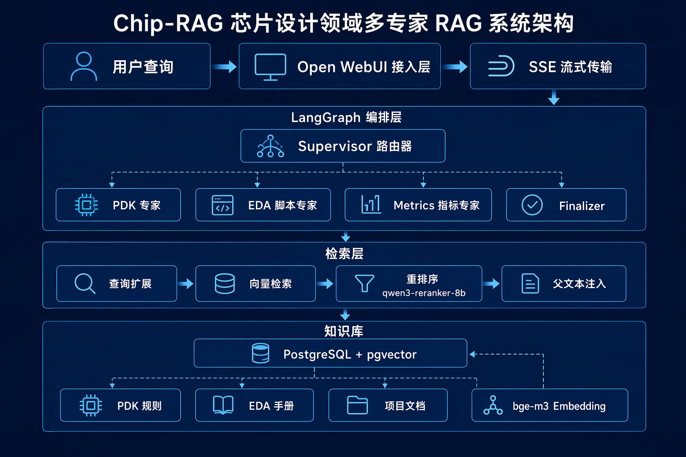
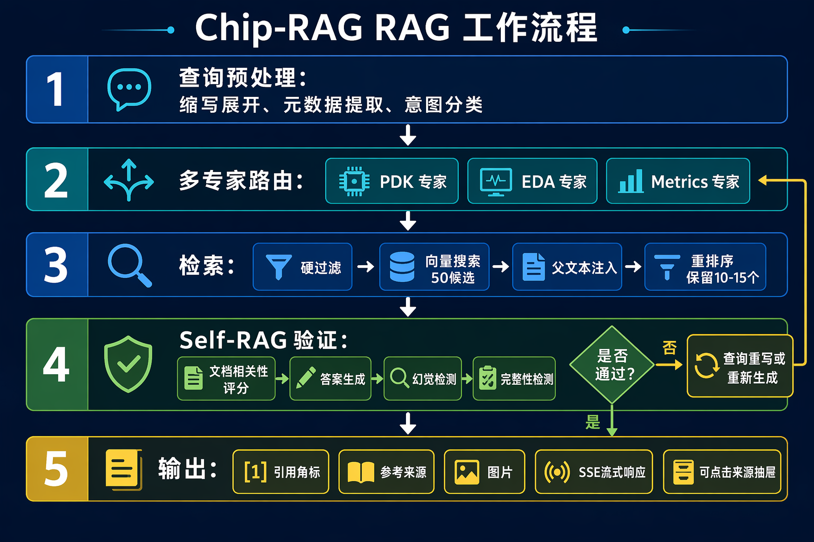
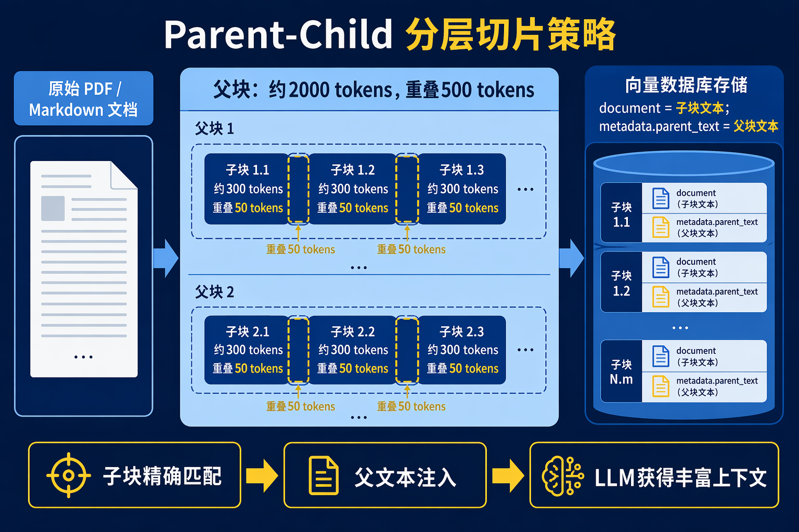
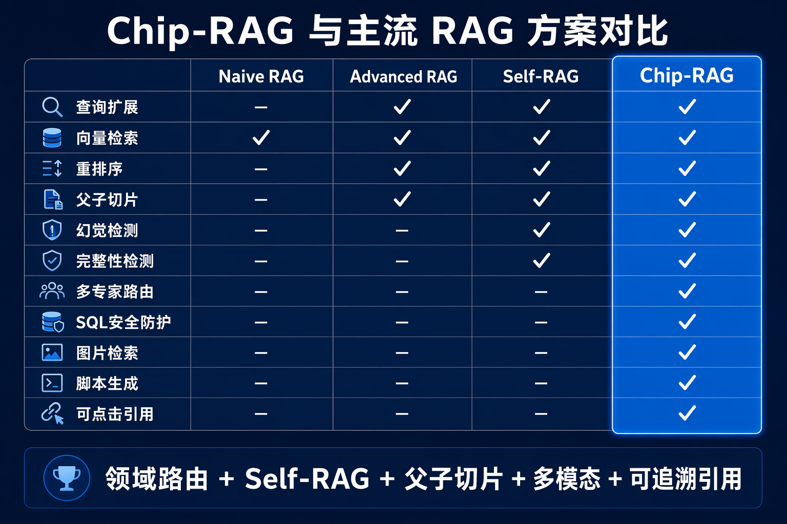

Chip-RAG · Architecture Guide
让芯片设计知识
可检索、可验证、可追溯
面向 PDK 规则、EDA 脚本与设计指标的多专家 RAG 系统
核心主张：领域路由决定检索边界，Self-RAG 决定回答可信度，引用抽屉让证据可回溯。
面向 PDK 规则、EDA 脚本与设计指标的多专家 RAG 系统
核心主张：领域路由决定检索边界，Self-RAG 决定回答可信度，引用抽屉让证据可回溯。

Supervisor 只负责理解与路由；专家节点负责领域回答，职责边界清晰。


按工艺节点、类别与规则语义检索；幻觉或不完整时重写答案。
DRC / LVS规则引用Tcl/Skill 生成后经过程序化 Lint 与 LLM Review，再进入精炼循环。
语法检查危险命令拦截Text-to-SQL 只允许只读查询，并结合项目文档完成总结。
SQL Guardrails单位规范当前验证器异常默认拒绝（False），并提供一次生成重试；长期可引入可观测评估集。

PDK、EDA、Metrics 三类专家与元数据过滤共同收窄问题空间。
引用角标、来源事件与可点击抽屉把答案连接到检索证据。
SQL 写操作阻断、脚本危险命令拦截、流式链路可观测。
混合检索（BM25 + 向量）；对话摘要 + 窗口；统一引用数据契约；建立回归查询集。
HyDE 查询扩展；缓存层；自动化评估流水线；按任务风险动态选择专家与验证强度。
多模态图文理解、知识图谱、工具调用与跨项目知识治理。